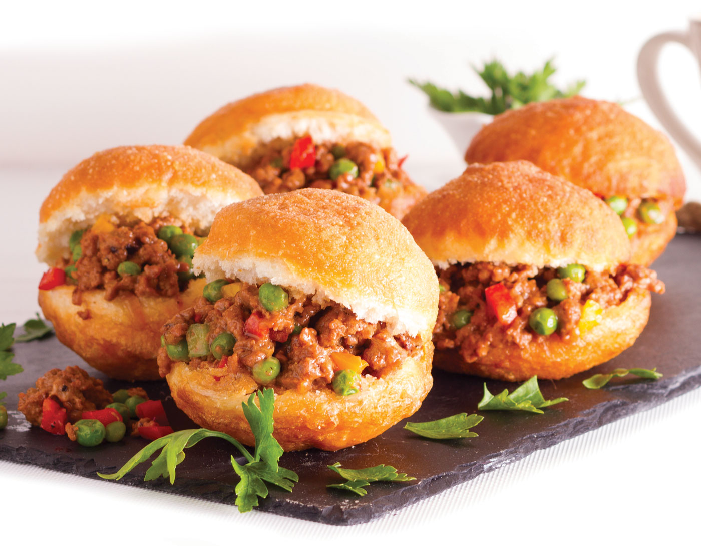

Recipes
Vetkoek

A traditional South African vetkoek
Ingredients:
- 1 kg Cake or Bread flour
- 15 ml Salt
- 60 ml Sugar
- 60 g Margarine
- 10 g Anchor Instant Yeast
- 625 ml Lukewarm water
Instructions:
- Mix the cake or bread flour, salt and sugar together and rub the margarine into the flour, with the fingertips. Add the Anchor Instant Yeast and mix.
- Add the lukewarm water to the flour mixture to form a soft dough. Add a little more water, if necessary. Knead the dough until smooth and elastic. Cover with greased plastic and rest for 10 minutes.
- Knock the dough down and roll into a roll. Cut into 24 equal pieces. Roll each piece into a ball and place them onto a well, greased tray - in order to be able to lift the risen balls.
- Cover with greased plastic and allow to rise in a warm place for 20 minutes.
- In the meantime, pour oil into a large saucepan, about ⅓ filled. Heat the oil for about 5 minutes before the frying time. Place a piece of dough into the oil to test the heat. (Slight bubbles around the dough, is an indication that the oil has warmed enough to be used).
- When the oil is ready, lift a risen ball carefully and place it into the warm oil - with the risen side (top) going in first, which will cause the flat side (bottom) to rise and puff out to make a round Vetkoek. Allow to colour on the one side for about 5 minutes and turn. Fry for a further 5 minutes, or until golden brown.
- Remove from the oil with a draining spoon and drain on paper towel or brown paper.